Ekler
Seriler
Çok basit bir sonlu seri
$$ 1 + \theta + \theta^2 + ... + \theta^{n-1} $$
Üstteki toplamı daha kısa bir formülle ifade edebilir miyiz?
$$ s_n = 1 + \theta + \theta^2 + ... + \theta^{n-1} $$
$$ \theta s_n = \theta + \theta^2 + \theta^3 + ... + \theta^n $$
Eğer 2. ifadeyi 1.'den çıkartırsak, pek çok terim iptal olacaktır,
$$ s_n - \theta s_n = 1 - \theta^n $$
$$ s_n ( 1 - \theta) = 1 - \theta^n $$
$$ s_n = \frac{1 - \theta^n}{1 - \theta} $$
Çoğunlukla fonksiyonlar sonsuz bir serinin toplamı olarak temsil edilebilirler. Mesela ünlü üstel baz $e^x$in açılımı [8,9],
$$ e^x = 1 + x + \frac{1}{2!}x^2 + \frac{1}{3!}x^3 + ... $$
İspat
$e^x$'in özelliği nedir? Türevinin kendisine eşit olmasıdır. O zaman öyle bir seri düşünelim ki türevini alınca kendisine eşiti olsun. Mesela
$$ 1 + x + x^2 + x^3 + ... $$
serisi "neredeyse" bu şarta uyuyor, çünkü türevini alınca
$$ 0 + 1 + 2x + 3x^2 + ... $$
Bu seri, $e^x$ açılımına benzer, üstel değerler doğru, ama katsayılar tam uymuyor. Onu telafi edebiliriz. $2x$'i $2$ ile, $3x^2$'i $3$ ile, vs bölersek, yani $n=0,1,2,..$ için $n!$ ile bölersek, katsayılar da uyumlu hale gelir, yani
$$ e^x = \sum_{ n=0}^{\infty} \frac{ x^n}{n!} $$
Bir güç serisinin genel şekli
$$ f(x) = a_0 + a_1(x-x_0) + a_2(x-x_0) + ... = \sum_{ n=0}^{\infty} a_n (x-x_0)^n$$
olarak gösterilir, $a_n$ katsayıları bilinmesi gereken katsayılardır. Çoğu durumda $x_0=0$'dir. O zaman
$$ f(x) = \sum_{ n=0}^{\infty} a_n x_n^n = 1+x+x^2+x^3+..$$
diye gider. Herhangi bir polinom herhangi bir $c$ merkezi etrafında rahat bir şekilde bir güç serisi (power series) olarak temsil edilebilir (muhakkak bu serinin çoğu katsayısı sıfır değerinde olacaktır).
Bir güç serisinin faydalı olması için sabit bir sayıya yakınsaması (converge) gerekir. Mesela matematikteki en önemli güç serilerinden biri olan geometrik serilere bakalım,
$$ 1 + x + x^2 + x^3 + .. = \sum_{n=0}^{\infty} x^n $$
Bu toplam $n \to \infty$ iken bir sayıya yaklaşır mı?
$$ s_N = 1 + x + x^2 + .. $$
diyelim. Şimdi bir numara, iki tarafı $x$ ile çarpalım,
$$ x s_N = x + x^2 + x^3 + .. $$
Eğer $s_N - xs_N$ hesaplarsak ne olur? İki üstteki formülde eşitliğin sağ tarafından bir üsttekinin sağ tarafını çıkartırız, her iki tarafta da $x + x^2 + x^3 + ..$ var ve bunlar iptal olur, geri kalanlar,
$$ s_N - xs_N = 1 $$
$$ s_N(1-x) = 1 $$
$$ s_N = \frac{1}{1-x} $$
Bu seri "başlangıcı 1, oranı $x$ olan bir geometrik seri" olarak ta ifade edilebilir, oran her terimin ortak katsayısı gibi görülür. Eğer başlangıç 1 oran $1-\alpha$ olsaydı,
$$ 1 + (1-\alpha) + (1-\alpha)^2 + .. $$
o zaman sonuç
$$ \frac{1}{1 - (1-\alpha)} $$
olarak çıkardı. Bu üstteki yöntemle kontrol edilebilir. Yani sonuç için başlangıç değeri bölünene, oran denilen değer ise 1'den çıkartılıp bölünene yazılır.
Bir diğer seri
$$ 1 - x + x^2 - x^3 + .. $$
güç serisi neye yaklaşır?
Yine aynı numara, ama bu sefer $-x$ ile çarpalım,
$$ s_N = 1 - x + x^2 - x^3 + .. $$
$$ -x s_N = -x + x^2 - x^3 + .. $$
- formülden 2.'yi çıkartalım,
$$ s_N + x s_N = 1$$
$$ (x+1)s_N = 1$$
$$ s_N = \frac{1}{x+1} $$
Türev Alırken Bölüm Kuralı (Quotient Rule)
Bölüm kuralı şöyle gösterilir
$$ \frac{ u(x)}{v(x)} = \frac{u(x)'v(x) - u(x)v(x)'}{v(x)^2} $$
Ya da $x$ göstermeden
$$ \frac{ u}{v} = \frac{u'v - uv'}{v^2} $$
Bu formülü hatırlamak biraz zor gelebilir. Eğer hatırlamıyorsak hatırlaması daha basit olan Çarpım Kuralı (product rüle) üzerinden türetebiliriz. Çarpım kuralı bildiğimiz gibi
$$ (uv)' = u'v + uv' $$
Burada bir numara yaparak
$$ (u \ \frac{ 1}{v})' $$
üzerinde Carpım Kuralını kullanarak türev alacağız, böylece otomatik olarak arka planda aslında $u/v$'nin türevini aldırtmış olacağız.
$$ \bigg(u \ \frac{ 1}{v}\bigg)' = u \bigg(\frac{1}{v}\bigg)' + u' \bigg(\frac{1}{v}\bigg) $$
Bu arada
$$ \bigg(\frac{ 1}{v}\bigg)' = -\frac{v'}{v^2} $$
Bölümde $v'$ var, çünkü unutmayalım $v$ aslında $v(x)$, o zaman ana formülde yerine koyalım
$$ = -u\frac{v'}{v^2} + u' \bigg(\frac{1}{v}\bigg) $$
$$ = \frac{u' }{v} -\frac{uv'}{v^2} $$
Birinci terimde bölüm ve böleni $v$ ile çarpalım, ki iki terimi birleştirebilelim,
$$ = \frac{u'v }{v^2} -\frac{uv'}{v^2} = \frac{u'v-uv'}{v^2} $$
Bazı $e$, Log Özellikleri
Bazen $\log$ bazen $\ln$ kullanıldığını görürsünüz. Eğer $\ln$ kullanılırsa bu $\log$ ifadesinin $e$ baz kullanan hali demektir, yani $\log_e$.
Çarpım log'u, logların toplamı olur.
$$ \log xy = \log x + \log y $$
Bölüm log'u, logların çıkartılması olur.
$$ \log x/y = \log x - \log y
\qquad (1)
$$
Aynı baz kullanan çarpımlar, tek baza indirilip üstleri toplanabilir.
$$ e^a \cdot e^b = e^{a+b} $$
Üstü olan bir ifadenin log'u, üst değerini aşağı indirir.
$$ \log(x^y) = y \log(x) $$
Üstün üstü (son üst tüm bazı kapsayacak şekilde ise) direk üstlerin çarpımına çevirilebilir.
$$ (e^x)^y = e^{xy} $$
$\ln$'nin bazı $e$ olduğuna göre, $e$ üzeri $\ln$ birbirini iptal eder, yani
$$ x = e^{\ln x} $$
Bu ifade (1)'den türetilebilir ama yine de ayrı vermek iyi olur, $1/x$'in log'u $x$'in negatifini verir.
$$ \log(1/x) = -\log(x) $$
Kısmi Kesirler Yöntemi (Partial Fractions Method)
Bazen şu şekildeki bir kesiri
$$ \frac{8x + 22}{(x-1)(x+5)} $$
bölendeki her çarpan ayrı bir kesir parçasında olacak şekilde o parçaların toplamı olarak göstermek faydalıdır.
$$ \frac{...}{(x-1)} + \frac{...}{(x+5)} $$
Bu tür bir parçalı kesirin verisini almak çok daha kolaydır mesela. Fakat bu parçalama işlemini nasıl yapacağız?
Cebir kullanarak bu problemi çözebiliriz. Üstte nokta nokta olan yerlerin ne olduğunu merak ediyoruz, o zaman onlara $A,B$ değişkenlerini atarsak
$$ \frac{A}{(x-1)} + \frac{B}{(x+5)} = \frac{8x + 22}{(x-1)(x+5)}$$
Eğer bölüm kısmında temiz bir eşitlik elde etmek istiyorsak, o zaman üstteki kesirlerin bölen kısmını birbirinin aynısı haline getirmeliyiz. İlk terimin bölüm, bölen kısmını $(x+5)$, ikincisinin bölüm, bölen kısmını $(x-1)$ ile çarparsak, bu eşitliği elde ederiz.
$$ \frac{(x+5)A}{(x-1)(x+5)} + \frac{(x-1)B}{(x+5)(x-1)} = \frac{8x + 22}{(x-1)(x+5)} $$
Bölen kısmı birbirine eşit olduğuna göre, artık sadece kesirlerin üst kısmını kullanabiliriz, çünkü aradığımız bilinmeyenler orada.
$$ (x+5)A + (x-1)B = 8x+22 $$
Eşitliğin sol tarafının açılımını düşünürsek,
$$ xA + .. + Bx + .. = 8x + .. $$
$$ x(A + B) + .. = 8x + .. $$
ve her iki tarafta $x$'in katsayılarının aynı olması zorunluluğundan hareketle
$$ A + B = 8 $$
olacaktır. Benzer şekilde geri kalan sabitleri eşitlersek
$$ 5A - B = 22 $$
O zaman elimizde iki bilinmeyen, iki denklem var, bu sistemi çözmek çok kolay!
$$ B = 5A - 22 $$
Öteki denkleme sokalım
$$ A + 5A - 22 = 8 $$
$$ 6A = 30 $$
$$ A = 5 $$
$$ B = 3 $$
Demek ki kısmi kesirlerimiz şöyle olacak
$$ \frac{5}{(x-1)} + \frac{3}{(x+5)} = \frac{8x + 22}{(x-1)(x+5)}$$
Trigonometri
Basit bazı temel bilgilerin üzerinden geçelim. Sinüs, kosinüs, tanjant nedir? Karşı, komşu, hipotenüs kullanan bazı tanımlar akılda kalmış olabilir, mesela alttaki açı $\alpha$ ve dik üçgenler için, karşı bölü hipotenüs sinüs, komşu bölü hipotenüs kosinüs, karşı bölü komşu tanjant.
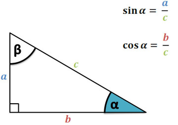
Aslında tanjant'ın esas tanımı sinüs bölü kosinüs,
$$ \tan \alpha = \frac{\sin\alpha}{\cos\alpha} = \frac{a / c}{b / c} = \frac{a}{b} $$
bölen $c$ iptal olduğu için geri kalanlar karşı bölü komşu.
Pitagor Kanunu
$a^2 + b^2 = c^2$
İspat
Dik üçgenimizi alıp yanyana koyarak bir kare oluşturuyoruz, artık hem dış çeperde bir kare var, ayrıca iç kısımda da bir kare var.

Bu karenin kenarları $b-a$ büyüklüğünde, alanı tabii ki $(b-a)^2$. Büyük karenin alanı $c^2$. Ama eğer büyük karenin alanını görülen beş tane parçayı toplayarak elde edebilirsek, Pitagor formülüne erisebiliriz.
$$ (b-a)^2 + 4 \frac{ab}{2} = (b-a)^2 + 2 ab = b^2 -2ab + a^2 + 2ab = a^2 + b^2 $$
Büyük kare eşitliğinden bu alan $c^2$'dir demiştik, o zaman
$$ c^2 = a^2 + b^2 $$
İspatı tamamlamış olduk.
Şimdi Pitagor kullanarak önemli bir trigonometrik eşitlik elde edeceğiz, alttaki dik üçgeni oluşturursak, $\theta$ ne olursa olsun mavi renkli çemberin yarıçapı, ve dik üçgenin hipotenüsü 1 olacaktır, ve $\sin\theta = a / 1$ olduğu için $\sin\theta = a$, yani karşı kenar $\sin\theta$, komşu kenar $\cos\theta$.
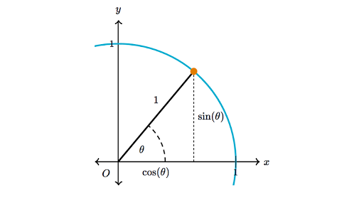
Bu kenar bilgilerine Pitagor üzerinden
$$ a^2 + b^2 = 1^2 $$
$a,b$ yerine koyarsak,
$$ \cos^2\theta + \sin^2\theta = 1 $$
Bu önemli bir trigonometrik eşitliktir.
Diğer Trigonometrik Eşitlikler
Toplam Formülleri
Acı toplama eşitliklerine bakalım. Bu eşitlikler
$$ \cos(A+B) = \cos A \cos B - \sin A \sin B $$
$$ \sin(A+B) = \sin A \cos B + \cos A \sin B $$
Ispata gelelim. Önce Euler eşitliği,
$$ e^{i\theta} = \cos\theta + i\sin\theta $$
Şimdi diyelim ki $\theta = A+B$, o zaman [11],
$$ \cos(A+B) + i\sin(A+B) = e^i(A+B) $$
$$ = e^{iA} \cdot e^{iB} $$
$$ = (\cos A + i\sin A) (\cos B + i\sin B) $$
Çarpımı açarsak,
$$ = \cos A \cos B + i\cos A \sin B + i\sin A \cos B - \sin A \sin B $$
Dikkat son terimdeki eksi işaretin sebebi $i \cdot i = -1$ olması çünkü hayali sayı $i$'nin tanımı $i = \sqrt{-1}$.
Bir gruplama yapalım,
$$ = \cos A \cos B - \sin A \sin B + i (\cos A \sin B + \sin A \cos B ) $$
Buraya nereden geldiğimizi hatırlayalım, üstteki ifadenin $\cos(A+B) + i\sin(A+B)$'e eşit olması gerekir. Eşitlik ne demektir? Üstteki formülün reel kısmını $\cos(A+B) + i\sin(A+B)$'in reel kısmına, hayali kısmının yine aynı formülün hayali kısmı ile eşit olması demektir. O zaman ispat tamamlanmış oldu.
Çift Açı Formülleri
İspatladığımız
$$ \cos(A+B) = \cos A \cos B - \sin A \sin B $$
formülünde eğer $B$ yerine $A$ kullanırsak, o zaman $2A$ elde ederiz, bunun açılımı neye eşit olur?
$$ \cos(A+B) = \cos(A+A) = \cos(2A) = \cos A \cos A - \sin A \sin A $$
$$ \cos(2A) = \cos A^2 - \sin A^2 $$
Ayni teknigi $\sin(A+B)$ uzerinde uygularsak,
$$ \sin(A+B) = \sin(A+A) = \sin(2A) = \sin A \cos A + \cos A \sin A $$
Bu iki terim birbirinin aynısı, o zaman
$$ \sin(2A) = 2\sin A \cos A $$
Şimdiye kadar elde ettiğimiz
$$ \cos^2\theta + \sin^2\theta = 1, \quad \cos^2\theta - \sin^2\theta = \cos2\theta $$
formüllerinden ek eşitlikler türetmek mümkün. Eğer iki formülü toplarsak
$$ 2\cos^2\theta = 1 + \cos2\theta $$
eğer 2'inciyi 1'inciden çıkartırsak,
$$ 2\sin^2\theta = 1 - \cos2\theta $$
elde ederiz.
Küçük Açı Yaklaşıklaması (Small Angle Approximation)
Bazı fizik kitaplarında ve eğer ufak açılar sözkonusu ise bazen $\sin\theta \approx \theta$ geçişi yapıldığını görüyoruz. Bu nereden geliyor?
Sinüs fonksiyonu üzerinde Maclaurin açılımı [4] yaparsak (yani sıfır etrafında Taylor açılımı),
$$ \sin\theta = \theta - \frac{\theta^3}{3!} + \frac{\theta^5}{5!} - \frac{\theta^7}{7!} + ... $$
Radyan olarak düşünürsek eğer $\theta$ çok küçük, yani sıfıra yakın ise küpü alınan çok küçük değer daha da küçülecektir, o zaman ikinci terim dahil olmak üzere tüm diğer terimler yok sayılabilir,
$$ \sin\theta \approx \theta $$
Dahası da var! Çok ufak bir açının kosinüsü 1'e yakındır, ve tanjant sinüs bölü kosinüs olduğu için bölen 1 iptal edilir, geriye kalanlar,
$$ \tan\theta \approx \sin\theta \approx \theta $$
Faydalı olabilir!
Sayısal olarak kontrol edelim,
theta = 0.01
print (np.sin(theta))
print (np.tan(theta))
0.009999833334166664
0.010000333346667207
Üstteki numaralar bazen ilginç şekillerde karşımıza çıkabilir, mesela bir eğrinin eğiminin ne olduğunu hatırlarsak,
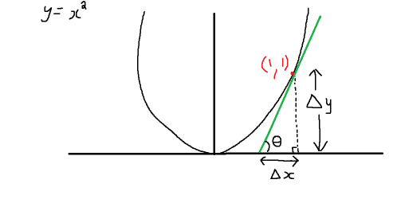
Eğim $\Delta y / \Delta x$, ki bu yaklaşık olarak türevin ta kendisi değil midir, yani $dy / dx$? Evet. Aynı şekilde üstte gördüklerimizden hareketle bu eğime $\tan\theta$ diyebiliriz, ve ufak açılar sözkonusu ise $\tan\theta \approx \theta \approx dy / dx$!
Ters Trigonometrik Formüller (Inverse Trigonometric Functions)
$\cos x$ için $\cos^{-1} x$ ya da $\arccos x$ ile gösterilen ters trigonometrik formüldür. $\sin x$ ve $\tan x$ için aynı şekilde.
Bu ters fonksiyonların türevi nasıl alınır? $\theta = \tan^{-1}x$ örneğinde görelim. Elde etmek istediğimiz $d\theta/dx$.
Eğer
$$ \tan^{-1}x = \theta$$
ise, o zaman
$$ \tan\theta = x $$
$x$'i aslında $\theta$'ya bağlı bir $x(\theta)$ fonksiyonu olarak görebiliriz. Eğer iki tarafın $\theta$'ya göre türevini alırsak
$$ \frac{dx}{d\theta} = \sec^{2}\theta $$
Bizim istediğimiz bunun tersi, o zaman bölümü tersine çevirelim
$$ \frac{d\theta}{dx} = \frac{1}{\sec^{2}\theta} $$
Pitagor Eşitliklerinden bildiğimize göre
$$ \sec^{2}\theta = \tan^{2}\theta + 1 $$
Yerine geçirelim
$$ \frac{d\theta}{dx} = \frac{1}{\tan^{2}\theta + 1} $$
İlk başta tanımladığımıza göre $\tan\theta = x$, bunu da üstte yerine koyalım
$$ = \frac{1}{x^2 + 1} $$
İçiçe Fonksiyonlar (Composite Functions) [1, sf. 191, 227]
$$ y = \frac{3}{2}x = \frac{1}{2}3x $$
bir içiçe fonksiyon olarak görülebilir.
$$ y = \frac{1}{2}u, \ u=3x $$
dersek, $y$ içindeki $u$ bir başka fonksiyon olabilir. Yani aslında
$$ y = f(u) $$
$$ u = g(x) $$
Yani
$$ y = f(g(x)) $$
Üstteki form bazen
$$ y = f \circ g $$
olarak ta gösterilebiliyor.
Zincirleme Kanunu (İçiçe Fonksiyonlar İçin)
Eğer $f(u)$, $u=g(x)$ noktasında, ve $g(x)$, $x$ noktasında türevi alınabilir durumda ise, o zaman içiçe fonksiyon $(f \circ g)(x) = f(g(x))$ $x$ noktasında türevi alınabilir demektir, ve
$$ (f \circ g)'(x) = f'(g(x)) \cdot g'(x) $$
doğru olacaktır. Leibniz notasyonu ile
$$ \frac{ dy}{dx} = \frac{ dy}{du} \cdot \frac{ du}{dx} $$
Üstteki formülü kesirlerin çarpımı olarak görmek kısmen doğru olabilir, en azından hatırlamak için iyi, ama formel ispat başka şekilde yapılıyor, detaylar için "$dy/dx$ bir kesir olarak görülebilir mi?" yazısına bakabilirsiniz.
Türev alırken $'$ işaretinin kullanılabilme sebebi fonksiyonda tek değişken olduğu zaman neye göre türev alındığının bariz olması.
Örnek
Başta verilen örnek için $dy/dx$' i bulun.
$$ \frac{ dy}{dx} = \frac{ 3}{2}, \ \frac{dy}{du} = \frac{ 1}{2}, \ \frac{ du}{dx} = 3 $$
$$ \frac{ dy}{dx} = \frac{ dy}{du} \cdot \frac{ du}{dx} $$
O zaman
$$ \frac{ 1}{2} \cdot 3 = \frac{ 3}{2} $$
Parçalı Entegral (Integration by Parts)
Aslında parçalı entegral türevlerin çarpım kuralının bir uzantısı sadece [12, sf. 17].
$$ \frac{\mathrm{d} }{\mathrm{d} x} [u v] = \frac{\mathrm{d} u}{\mathrm{d} x} v + u \frac{\mathrm{d} v}{\mathrm{d} x} $$
Şimdi iki tarafın türevini alalım,
$$ \int_{a}^{b} \frac{\mathrm{d}}{\mathrm{d} x} [u v] \mathrm{d} x = \int_{a}^{b} \frac{\mathrm{d} u}{\mathrm{d} x} v \mathrm{d} x + \int_{a}^{b} u \frac{\mathrm{d} v}{\mathrm{d} x} \mathrm{d} x $$
Ustteki temel Calculus kanunundan geliyor,
$$ \Rightarrow u v |{a}^{b} = \int{a}^{b} \frac{\mathrm{d} u}{\mathrm{d} x} v \mathrm{d} x + \int_{a}^{b} u \frac{\mathrm{d} v}{\mathrm{d} x} \mathrm{d} x $$
$$ \Rightarrow \int_{a}^{b} u \frac{\mathrm{d} v}{\mathrm{d} x} = u v |{a}^{b} - \int{a}^{b} \frac{\mathrm{d} u}{\mathrm{d} x} v \mathrm{d} x $$
Bu parçalı entegral formülüdür. Daha rahat hatırlamak için çoğu zaman $u=f(x),v=g(x)$ kabul edilir, o zaman $du = f'(x)dx$ ve $dv = g'(x)dx$ olur, ve şu form ortaya çıkar,
$$ \int u \mathrm{d} v = uv - \int v \mathrm{d} u$$
Bu formül birinci entegral $\int u \mathrm{d} v$'yi ikinci bir entegral $\int v \mathrm{d} u$ üzerinden tarif etmiş olur, bazı durumlarda ikinci entegral hesabı daha kolay olabileceği için o tercih edilebilir, ve parçalı entegral formülüyle o entegrale geçiş yapılmış olur [1, sf. 562].
Eşsizlikler (Singularities)
Eşsiz nokta bir fonksiyonun analitikliği kaybettiği yerdir. Sıfır ile bölünmek mesela eşsizlik sebeplerinden bir tanesidir. Ya da içinde dallanma noktası taşıyan tüm fonksiyonlar o noktada analitikliği kaybederler, türevleri alınamaz, bu sebeple eşsizlik taşırlar. Mesela $f(z) = z^{1/2}$ ya da $f(z) = \sqrt{z}$ fonksiyonunda, her $z$ değeri için iki tane $z^{1/2}$ değeri vardır.
Basit örnek,
$$ f(z) = \frac{ \sin z}{z} $$
Bu fonksiyon $z=0$ noktasında tanımsızdır, çünkü $f(0) = 0/0$ ve sıfır ile bölmek tanımsızdır, o zaman $f(z)$ sonlu hayali düzlemin her yerinde analitiktir, sadece $z=0$ noktasında değildir [5, sf 364].
Şimdi ilginç bir numara, bazen eşsizliği "çıkartmak" mümkündür; önce suna dikkat, $z \to 0$ iken fonksiyonun limiti var, $$ \lim_{z \to 0} \frac{ \sin z}{z} = \lim_{z \to 0} \frac{\cos z}{1} = 1 $$
Üstteki $\cos z/1$ geçişini yapabildik çünkü L'Hospital kuralını hatırlarsak $\lim_{z \to z_0} f(z)/g(z) = \lim_{z \to z_0} f'(z)/g'(z)$. O zaman parçalı bir fonksiyon yaratarak eşsiz noktadaki "boşluğu doldurmak" mümkündür, yani bu fonksiyonu her noktasında türevi alınır hale getirebiliriz. Fonksiyon $f(z)$'yi "sarmalayan" yeni bir $f(z)$ yaratırsak,
$$ g(z) = \left\{ \begin{array}{ll} \frac{\sin z}{z} & z \ne 0 \\ 1 & z = 0 \end{array} \right. $$
Bu fonksiyonun $z=0$ noktasında artık türevi alınabilir. Kontrol edelim,
$$ f'(0) = \lim_{z \to 0} \frac{f(0)-f(z)}{z} $$
$$ = \lim_{z \to 0} \frac{1-\sin(z)/z}{z} $$
$$ = \lim_{z \to 0} \frac{z-\sin(z)}{z^2} $$
L'Hospital,
$$ = \lim_{z \to 0} \frac{1 - \cos z}{2z} $$
Tekrar
$$ = \lim_{z \to 0} \frac{ \sin(z)}{2} $$
$$ = 0 $$
$z=0$ noktasına çıkartılabilen eşsizlik ismi verilir, çünkü fonksiyonun eşsizlik noktasındaki değerini o noktadaki limiti haline getirirsek, o noktadaki eşsizliği çıkartmış oluruz.
$dy/dx$ bir kesir olarak görülebilir mi?
Mesela [1, sf. 225] bölüm 3.8'te türev $dy/dx$'in bir kesir, bir oran olmadığı söylenir. Fakat bu şekilde görülemez mi? Çünkü $dy = f'(x)dx$ formülünde $dx$ için gerçek sayılar verip sonucu (diferansiyeli) $dy$ olarak hesaplayabiliyoruz. Eğer bu formülü tekrar düzenlersek $dy/dx$ for kesir olarak görülebilirdi.. belki.
Fakat bu teorik olarak tamamiyle, her zaman işlemiyor. Yani pratikte bazen bu şekilde görebiliyoruz, fakat işin en temelinde durum böyle değil.
Tarihsel olarak, Calculus'u keşfeden matematikçi Leibniz bu notasyonu ileri sürdüğünde $dy/dx$'i bir kesir olarak düşünmüştü, bu değerin temsil ettiği büyüklük "$x$'deki sonsuz ufak (infinitesimal) değişimin $y$'de yarattığı sonsuz ufak değişime oranı" olarak düşünülüyordu.
Fakat Calculus'un sonsuz ufaklıklar mantığını reel sayılar çerçevesinde kullanmak teorik olarak pek çok problemi beraberinde getiriyor. Bunlardan biri, sonsuz ufaklığın reel sayıların olduğu bir çerçevede var olamamasıdır! Reel sayılar önemli bir önşartı yerine getirirler, bu şartın ismi Arşimet Şartı'dır. Bu şarta göre, ne kadar küçük olursa olsun herhangi bir pozitif tam sayı $\epsilon > 0$, ne kadar büyük olursa olsun reel bir sayı $M>0$ bağlamında, $n\epsilon > M$ şartını doğrulayacak bir doğal sayı $n$ her zaman mevcuttur. Fakat sonsuz ufak bir $\xi$ o kadar ufak olmalıdır ki onu kendisine ne kadar eklersek ekleyelim, hiçbir zaman 1'e erişemeyiz, ki bu durum Arşimet Şartına aykırı olur [..]
Bu problemlerden kurtulmak için takip eden 200 sene içinde Calculus ta temelinden başlayarak sıfırdan tekrar yazılmıştır, ve şimdi gördüklerimiz bu sıfırdan inşanın sonuçları (mesela limit kavramı bunun bir sonucu). Bu tekrar yazım sayesinde / yüzünden türevler artık bir oran değil, bir limit.
$$ \lim_{h \to 0} \frac{f(x+h) - f(x)}{h}$$
Bu "oranın limiti"ni "limitlerin oranı" olarak yazamayacağımız için (çünkü hem bölüm, hem bölen sıfıra gidiyorlar), o zaman türev bir oran değildir.
Fakat Leibniz'in notasyonu o tür kullanımı özendiriyor sanki, oraya doğru bir çekim yaratıyor, hatta bazen notasyonu o şekilde görmenin işe yaradığı bile oluyor, yani çoğu zaman bu notasyon sanki kesirmiş gibi davranıyor. Zincirleme Kanunu mesela
$$ \frac{dy}{dx} = \frac{dy}{du}\frac{du}{dx} $$
Türevlerin kesir olarak görüldüğü bir durumda üstteki ifade hakikaten doğal duruyor. Ya da Tersi Fonksiyon (Inverse Function) teorisi
$$ \frac{dx}{dy} = \frac{1}{\frac{dy}{dx}} $$
sonucu da eğer türevleri kesir olarak düşünüldüğü bir ortamda doğal gelecektir. İşte bu sebeple, yani notasyonun çok güzel ve özendirdiğinin çoğunlukla doğru şeyler olması sebebiyle artık bir limiti temsil eden notasyonu kullanmaya devam ediyoruz, her ne kadar artık gerçekten bir kesiri temsil etmiyor olsa bile. Hatta şu ilginç tarihi anektodu ekleyelim, bu notasyon o kadar iyidir, Newton'un notasyonu olan tek tırnak ($y'$ gibi) işaretinden o kadar ileridir ki bazılarının iddiasına göre İngiltere'deki matematik ve bilim kara Avrupa'sının yüzyıllarca gerisinde kalmıştır - çünkü Newton ve Leibniz arasında Calculus'u kimin keşfettiği konusunda bir çatışma yaşandı (bugünkü konsensüs ikisinin de Calculus'u aynı anda keşfettiği üzerine), ve bu çatışma ortamında İngiliz bilim çevresinin Avrupa'daki ilerlemeleri, Leibniz notasyonunu dışlayıp Newton'u takip etmeleri sonucunu getirdi.. ve bu sebeple pek çok alanda geri kaldılar [..].
Sonuca gelirsek, $dy/dx$'i bir kesir gibi yazıyor, ve pek çok hesapta onu sanki bir kesirmiş gibi kullanıyor, kullanabiliyor olsak bile, $dy/dx$ bir kesir değildir, sadece filmerde o rolü oynar (!).
Sonsuz Kuvvet, Calculus'un Temeli
Calculus'un bu kadar başarılı olmasının sebebi nedir? Calculus'un başarısının altında yatan sır çetrefil problemleri ufak parçalara bölebilmesi [10]. Tabii ki bir problemi parçalara bölmeyi pek çok diğer alanda da görüyoruz. Ama Calculus bunu en radikal şekilde yapıyor, problemleri sonsuz ufak parçalara bölebiliyor. Bir problemi bir, iki, vs. parçaya bölmek yerine onu bölüyor, bölüyor, ta ki problem unufak sonsuz tane parçalar haline gelinceye dek, sonra problemi o ufacık parçalar için çözüyor, ki bu noktada çoğunlukla çözüm büyük problemden çok daha rahattır. Sonra herşeyi biraraya koyuyor, bu adım bölmekten daha zor olabilir ama yine de esas büyük problemi çözmekten daha kolaydır, ve çözüme ulaşılıyor.
Yani Calculus iki adımda işini yapıyor, bölmek ve biraraya koymak. Bölme kısmına diferansiyel Calculus deniyor, biraya koyma kısmına entegral Calculus.
Calculus aslında çok eskidir, çünkü biraz önce bahsettiğimiz prensibin takip edilmesi için muhakkak formülsel formlar takip etmek şart değil. Mesela M.Ö. 250 zamanında yaşamış Arşimet bir çemberin alanını aşağı yukarı şöyle bir yaklaşımla buldu. Elimizde bir daire var, bir pizza diyelim, bu pizzanın alanını bulmak istiyoruz,
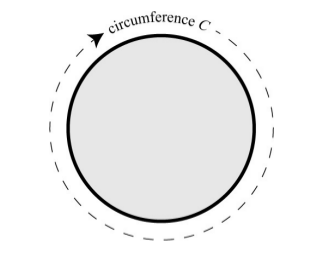
Bildiklerimiz pizzanın yarıçapı (radıus) $r$ ve çevresi $C$. Eğer pizzadan ufak bir parça kessek parçanın iki yanı tabii ki $r$ olur.
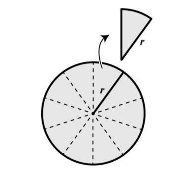
Alan hesabı yapmak istiyoruz, bir fikir şu, pizzayı dört parçaya bölelim, sonra parçaları yanyana koyalım.
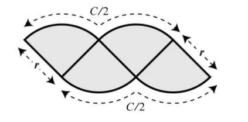
Bu pek düzgün bir şekil olmadı, alanı rahatça hesaplamak kolay değil. Emin olduğumuz bir şey var, engebeli olsa da üst kısım $C/2$ uzunluğunda, alt kısım aynı şekilde. Bir dikdörtgen olsa iyi olurdu, o şekle erişmemiş olmamızın sebebi yeterince ufak parçaya bölmemiş olmamız mı acaba? 8 parçaya bölelim, ve yine parçaları yanyana koyalım,
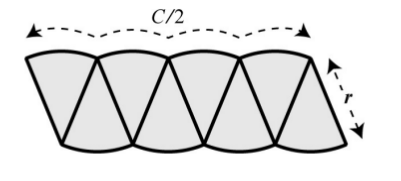
Bu şekil bir paralelogramı andırmaya başladı. Fena değil, üst, alttaki sınırların engebesi azaldı, düzleşmeye başladılar. Aslında bir dikdörtgenimsi sekle ufak bir hamle ile daha yaklaşabiliriz, soldaki parçanın yarısını alıp sağ tarafa yapıştıralım,
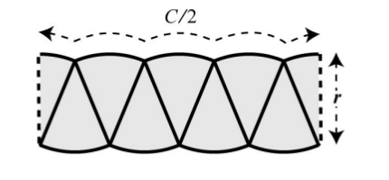
Güzel. Hala tam düzleşme elde edemedik, eh ama şimdiye kadar ufalta ufalta bayağı yol aldık, daha da ufaltalım, 16 parça,
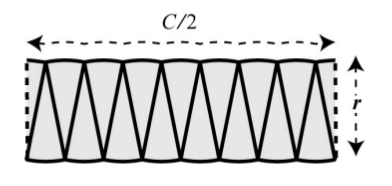
Ne kadar parçaya bölersek o kadar dikdörtgene yaklaşıyoruz. Üstteki şekil dikdörtgene yaklaştığı için sonsuz parçanın birleşmesinin limite giderken tam bir dikdörtgen olacağını biliyoruz.
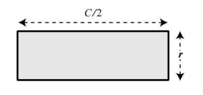
Bu dikdörtgenin alanını bulmak çok kolay, $r \cdot C/2$. Eh bölünen parçaları kaybetmedik, hepsini kullandık, o zaman bu alan en baştaki dairenin de alanı olmalı! Arşimet işte daire alanını, matematiksel ispatı ile beraber, işte böyle hesapladı
Not: Formülleri daha detaylandırırsak, $C$'nin $r$ ile ilişkisi zaten biliniyorsa, $C = 2 \pi r$, buradan alan
$$ A = r C/2 = r (2 \pi r)/2 = \pi r^2 $$
Fakat $C$ bazlı alan ispatının en dahiyane kısmı sonsuzluğun kullanılma şekli. 4, 8, 16 ile başladık, parçaların toplamı gitgide daha çok dikdörtgene benzemeye başladı. Ama sonsuz tane parçanın limitinin ortaya çıkarttığı şekil tam dikdörtgen olacaktı, ve nihai hesapta bu formu kullanabilirdik. İşte Calculus'un temeli burada yatıyor. Sonsuzluğa gidince herşey daha basit hale geliyor.
Bazı yaygın z-transform'ları
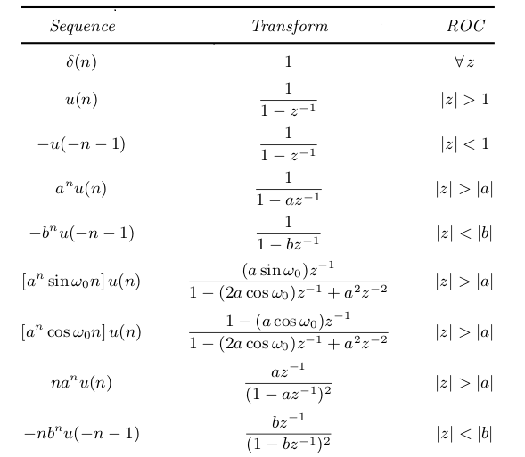


Kaynaklar
[1] Thomas, Thomas Calculus, 11th Edition
[2] Ifeachor, Digital Signal Processing, pg. 105
[3] Slicer, Digital Signal Processing using Matlab, pg. 119
[4] Wikipedia, Small angle approximation, https://en.wikipedia.org/wiki/Small-angle_approximation
[5] B. A. Shenoi, Introduction to DSP and Filter Design, pg. 41
[6] Mauch, Introduction to Methods of Applied Mathematics
[7] Mattuck, Introduction to Analysis
[8] Wikipedia, Power Series, http://en.wikipedia.org/wiki/Power_series
[9] Moore, Introduction to Partial Differential Equations
[10] Strogatz, Infinite Powers
[11] Blackpenredpen, Angle Sum formula, proof by complex number, https://www.youtube.com/watch?v=OcXqF8l2crI
[12] Gockenbach, Understanding and Implementing FEM